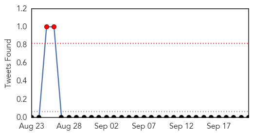
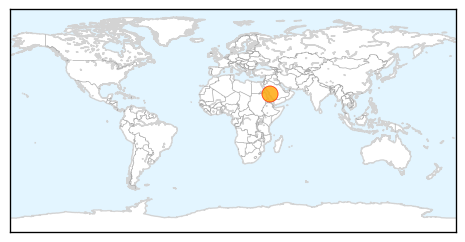
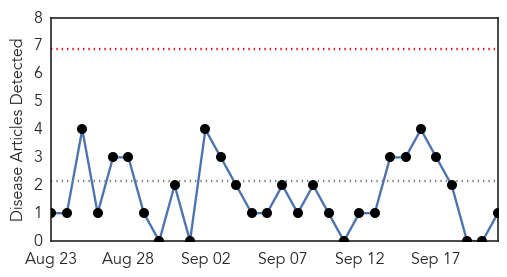
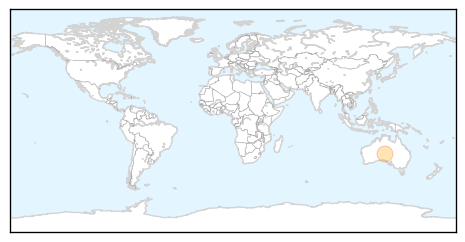

MERS
30-Day Web Trend
0 alerts, 0 warnings

30-Day Twitter Trend
2 alerts, 0 warnings

Article Locations
Article Confidences

Top Articles:
Top Tweets:
- 0.569
- AFD Blog `Saudi MOH Reports 1 MERS Case In Najran' MERS-CoV http://t.co/jG1ZFC5jO5
Pertussis
30-Day Web Trend
0 alerts, 0 warnings

30-Day Twitter Trend
0 alerts, 0 warnings

Article Locations
Article Confidences

Top Articles:
Top Tweets:
-
No tweets found for Sep 21, 2015